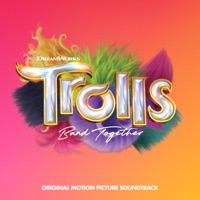
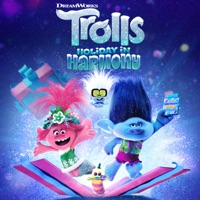
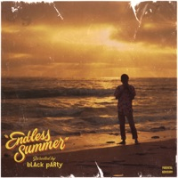
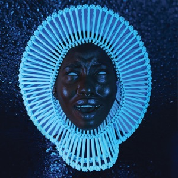
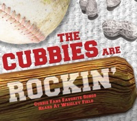
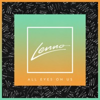

Have Some Love (2016)

Little Foot Big Foot, dir. Hiro Murai (2024)

Psilocybae, dir. Casey Frey (2025)
SUGARMAN LTD.
San Fernando Valley, California
Credits
Updated October 14, 2026
Mr. Sugarman is a guitarist, producer and writer. Records he played on, wrote for or produced, newest first. Links go to Apple Music and Spotify.
| 2024 | Childish Gambino, Atavista (RCA). Co-wrote and co-produced "Little Foot Big Foot" (feat. Young Nudy). Guitar on "Psilocybae (Millennial Love)". Both first appeared on 3.15.20 in 2020. Little Foot Big Foot on Apple Music · on Spotify Psilocybae (Millennial Love) on Spotify · the album on Spotify | |
 | 2023 | Trolls Band Together: Original Motion Picture Soundtrack (RCA). Guitar on "Let's Get Married", "Vacay Island", "BroZone's Back" and "Hustle Dimension". Let's Get Married · Vacay Island · BroZone's Back · Hustle Dimension on Apple Music · the album on Spotify |
 | 2021 | Trolls Holiday in Harmony EP (RCA). Guitar on "Signed, Sealed, Delivered (I'm Yours)" and "Together Now" with Justin Timberlake, Anna Kendrick, Anderson .Paak, Anthony Ramos and Ester Dean. Signed, Sealed, Delivered · Together Now on Apple Music |
 | 2019 | bLAck pARty, "No Complaints" (feat. DMP Jefe), on Endless Summer. Co-wrote. On Apple Music |
 | 2016 | Childish Gambino, "Awaken, My Love!" (Glassnote). Guitar on "Have Some Love", which he wrote with Donald Glover and Chris Hartz. Have Some Love on Apple Music · on Spotify · the album on Spotify |
 | 2016 | The Believers, "Sweet Home Chicago" (feat. Sam Sugarman), on The Cubbies Are Rockin' (RockBeat Records). The Chicago Cubs won the World Series that year. This was not the reason. On Apple Music |
 | 2016 | Lenno & Jack Novak, "All Eyes On Us" (feat. Racella). Co-wrote. On Apple Music |
| 2010 | "Scared With You", sung by the cast of Scooby-Doo! Curse of the Lake Monster (Nick Palatas, Kate Melton, Robbie Amell, Hayley Kiyoko and Frank Welker). Co-wrote. | |
| 2008–2009 | Discovery Zone. The first band: co-founded, co-fronted, guitar. A promo single, "Machine", came out on Something In Construction in 2008. The band's last show was September 25, 2009, opening for The Nightman Cometh at the Hollywood Palladium. Its song "Bless the Plague" plays in the bar scene on Earth in the extended cuts of Avatar (2010). The EP is still up. Bless the Plague · the EP on SoundCloud · "Machine" on Discogs |
Music Videos
Have Some Love (2016) |
Little Foot Big Foot, dir. Hiro Murai (2024) |
Psilocybae, dir. Casey Frey (2025) |
Film, Television and Advertising
Where the music has turned up, newest first.
| 2025 | Goosebumps (Disney+), season 2, episode 5, "The Boy Who Cried Monster". "Little Foot Big Foot". |
| 2023 | Bose, "Sound Is Power", written and directed by Donald Glover for the QuietComfort Ultra headphones. "Little Foot Big Foot", then still titled "35.31". |
| 2019 | Stuber (20th Century Fox). "The First Noel". |
| 2018 | Game Over, Man! (Netflix). "Have Some Love". |
| This Is Us (NBC). | |
| Google and Pepsi, commercials. | |
| 2010 | Scooby-Doo! Curse of the Lake Monster (Warner Bros.). "Scared With You", sung by the cast. |
| 2010 | Avatar, the extended cuts (20th Century Fox). "Bless the Plague", by Discovery Zone, in the bar scene on Earth. |
On Stage
 This Is America Tour, Duluth, Georgia, September 6, 2018 |
 Coachella 2019, headline set, weekend two |
Guitar for Childish Gambino from Pharos in 2016 through the This Is America Tour, 35 shows across North America, Europe and Australia from September 2018 to October 2019, including the headline sets at Coachella on April 12 and 19, 2019. Also guitar for Albert Hammond Jr., PHASES (formerly JJAMZ), Pink Sweat$ and Mark Noseworthy.
Music director for 88rising's Head in the Clouds festival, 2021.
On weekends. Musical director, guitarist and singer of The Midnight Special, a 13-piece wedding band for West Coast Music, from age 25 to 36, about forty shows a year.
Microwave Studios
UHF Corp., doing business as Microwave Studios, was Mr. Sugarman's production company: motion pictures, film distribution and virtual-reality games, per the trademark filed in 2022. Its projects included Dough Bears. The company has since closed, and said nothing about Dough Bears on the way out.
Copyright © 2026 Sugarman Ltd.